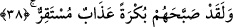

37. Onlar Lût’un misâfirlerine karşı kötülük yapmayı planlamışlardı. Hemen biz
onların gözlerini silme kör ettik. «Haydi azabımı ve uyarılarımı tadın!» (dedik).
“Onlar Lût’un müsafirlerine karşı kötülük yapmayı planlamışlardı.” Âyet-i
kerîme’nin mânâsı şöyledir; Andolsun kavmi, Lût’tan, gelen müsafirlerini kendilerine
teslim etmesini istediler. Halbuki onlar beraberlerinde Cebrâîl (a.s.) olduğu halde genç
delikanlı şeklinde meleklerdi. Kavmi bu melekleri insan zannederek iğrenç arzularını
tatmin etmek istediler.
“Hemen biz onların gözlerini silme kör ettik.” Yâni biz onların gözlerini sildik.
Yüzlerini, diğer kısımları gibi izi belirsiz olarak dümdüz ettik.
Rivâyet edildiğine göre, onlar Lût (a.s.)’ın evine zorla girince, Cebrâîl (a.s.) onlara
sessizce öyle bir darbe vurdu ki, kapıyı bulamaz halde kaçacak yer aramaya başladılar.
Lût (a.s.) onları dışarı çıkardı.
Meleklerin diliyle onlara dedik ki: “Haydi azabımı ve uyarılarımı tadın.” Âyette
geçen azabtan maksad, uyarılmış oldukları gözlerinin kör edilmesi olayıdır. Burada,
gözlerinin kör edilmesi, kökünden silinip yok edilmesi sonucu olduğuna işâret vardır.
Bu sebepledir ki, Kur’ân-ı Kerim’de “Kim beni anmaktan yüz çevirirse şüphesiz
onun sıkıntılı bir hayatı olacak ve biz onu kıyâmet günü kör olarak haşrederiz.”
(Tâhâ, 20/124) buyurulmuştur. Çünkü o insan Allah’ın zikrinden yüz çevirmiş ve ona
hiç yönelmemiştir.
38. Bir sabah kendilerine, yakalarını bir daha bırakmayacak olan bir azap gelip
çattı.
Bu azap, başlarına taşlar yağdırılması ve yerin dibine batırılmalarıdır. Âyet-i
kerîmede geçen “mustakir” vasfı onlardan hiç ayrılmayacak, cehennem azabına
sürükleyinceye kadar yakalarını bırakmayacak şekilde devamlı olan ve âhiret azabı ile
birleşen azâb demektir. Daha önce verilen gözlerinin silme kör edilmesi cezâsı dünyada
son bulur. Âyet-i kerîmede geçen azabın devamlı olması anlamındaki “mustakir” vasfı
ile nitelendirilmesi, köylerinin üstünün altına getirilip başlarına geçirilmesi, üzerlerine
taş yağdırılması azabı, gözlerinin silme kör edilmesi azabından ayrıdır. Kör edilmeleri
azabı dünyalıktır, âhiret azabına bitişik değildir. Yerin dibine batırılmaları ve taşlanma
azapları âhiret azâbı ile birleşiktir. Peygamber (s.a.)’in “Ölen kişinin muhakkak
kıyâmeti kopmuştur”[153] hadis-i şerifi’nin de işâret ettiği gibi onlar bu azapla, âhirete
bitişik olan berzaha kadar intikal edeceklerdir. Dünya ölçüleriyle zamanlar birbirine
bitişik oldukları gibi ölüm zamanı, kıyâmet zamanına bitişik olması bakımından böyle
buyurulmuştur.